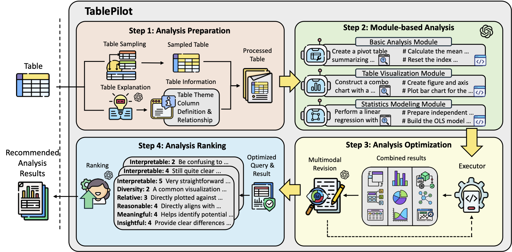
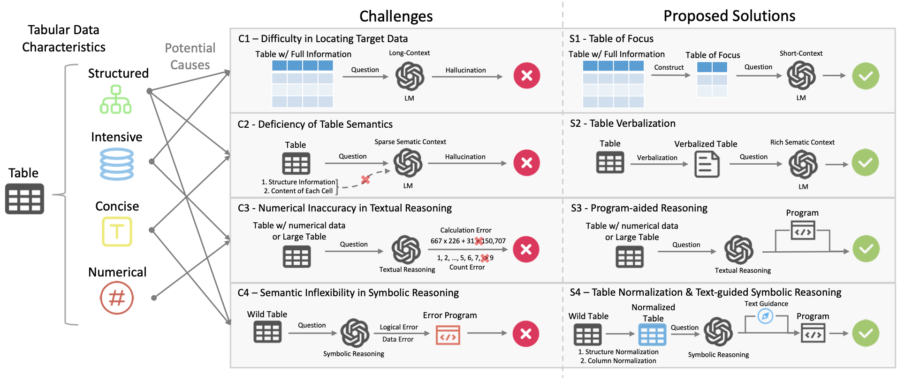
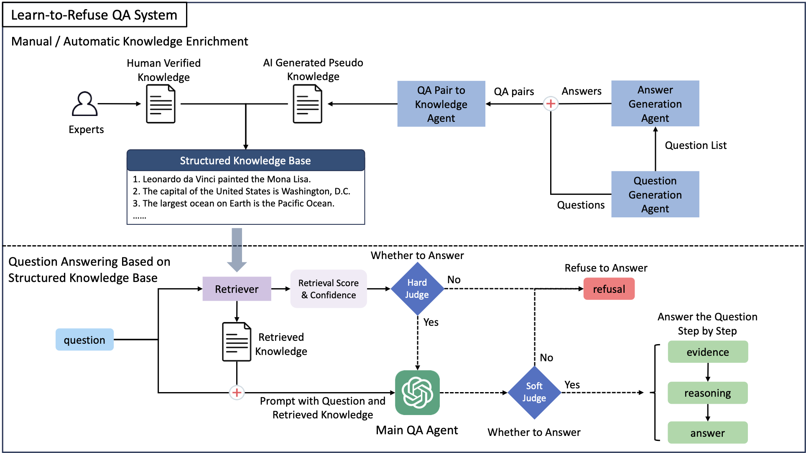

|
Lang Cao Hi! 👋 Here is Lang Cao, a PhD student in Computer Science at the University of Illinois Urbana-Champaign (UIUC), happily advised by Prof. Guo Yue. Before starting my PhD, I interned at Microsoft Research, where I had a wonderful experience and was fortunate to collaborate with Haoyu Dong and Mengyu Zhou. Previously, I received my Master's degree in Computer Science from UIUC and earned my Bachelor's degree from Wuhan University of Technology. I am an open researcher. My research primarily focuses on artificial intelligence (AI), particularly large language models (LLMs) and their applications. Beyond AI research, I'm also an active practitioner in Web3 and quantitative trading. |
ResearchMy academic research focuses on machine learning, machine reasoning, and their applications on health. Recently, I have been interested in improving the reasoning capabilities of LLMs and exploring their practical applications. My previous research experience spans various areas, including LLM Reasoning, LLM Generation, Table LLMs, AI for Health, LLM Agents, NLP Applications, as well as other topics related to LLMs and machine learning (ML). Selected research projects are listed below. |
|
 |
TablePilot: Recommending Human-Preferred Tabular Data Analysis with Large Language Models
Deyin Yi, Yihao Liu, Lang Cao, Mengyu Zhou, Haoyu Dong, Shi Han, Dongmei Zhang ACL 2025 Industry Track (Oral), 2025 bibtex / paper [Table LLMs] We introduce the TablePilot framework based on LLMs; when given an input table, it outputs recommended data analysis queries along with their corresponding code and results. |
|
 |
TableMaster: A Recipe to Advance Table Understanding with Language Models
Lang Cao, Hanbing Liu Under Review, 2025 bibtex / paper / code [Table LLMs] We analyze the challenges of table understanding with language models and propose a recipe and comprehensive framework to address them. |
|
 |
Learn to Refuse: Making Large Language Models More Controllable and Reliable through Knowledge Scope Limitation and Refusal Mechanism
Lang Cao EMNLP 2024 Main Conference, 2024 bibtex / paper / code [LLM Generation] The paper introduces 'Learn to Refuse' (L2R), a method empowering large language models to refuse answering difficult questions, thereby improving accuracy and reliability by utilizing a separate, expandable knowledge base. |
|
For more research, please check out my Google Scholar . |
Education and Experiences |
|
Ubiquant
May 2025 - Sept. 2025 | Shanghai, China AI and Quant Intern Research Focus: AI for Quantitative Trading. Mentor: Ziwei Yang |
|

|
Microsoft Research
Aug. 2024 - June 2025 | Beijing, China Research Intern at Data Knowledge and Intelligence Group Research Focus: Spreadsheet Intelligence, Table LLMs, General Machine Reasoning. Mentor: Haoyu Dong, Mengyu Zhou |
|
Tsinghua University
Nov. 2024 - Feb. 2025 | Beijing, China Research Assistant at THU-NLP Lab Research Focus: Multi-modal Learning and Reasoning. |
|
|
iFLYTEK
June 2021 - Aug. 2021 | Hefei, China AI Algorithm Intern at Smart Car Technology R&D Division Focus: AI Applications on Smart Cars. Mentor: Shenan Li |
|

|
University of Illinois Urbana-Champaign (UIUC)
Doctor of Philosophy in Computer Science Aug. 2025 - Present | Urbana, US Research Area: Machine Learning; Machine Reasoning; AI for Health Advisor: Prof. Yue Guo Master of Science in Computer Science Aug. 2023 - May 2024 | Urbana, US Research Area: AI for Healthcare; Natural Language Processing Resaerch Assistant at Sunlab Jan. 2023 - May 2024 | Urbana, US Research Focus: NLP / LLMs Applications for Healthcare and Legal. |
|
Wuhan University of Technology (WUT)
Bachelor of Engineering in Software Engineering Sept. 2018 - June 2022 | Wuhan, China Rank 1st/79, GPA 93.51/100 (3.94/4.0), National Scholarship |
Miscellanea |
Selected Rewards |
|
Invited Talks |
|
Academic Service |
|
|
|

{kind=link}
|
© Copyright Lang Cao (last updated May 22, 2025). |